O MANIFESTO NAVALHA
Por que criamos um motor gráfico determinístico anti-design em Rust e WebAssembly, rejeitando a inteligência artificial generativa e a pasteurização do design corporativo.
1. Histórico e Justificativa do Projeto
Nas últimas duas décadas, o design gráfico digital sofreu uma pasteurização em massa. Ferramentas corporativas de conveniência (no estilo Canva) e, mais recentemente, geradores probabilísticos de inteligência artificial inundaram o mundo com gradientes suaves idênticos, iluminações volumétricas sintéticas e layouts milimetricamente calculados para não ofender nem provocar ninguém.
O Navalha nasce como a antítese dessa conveniência covarde. Ele resgata a tradição da **contracultura gráfica, do fanzine punk, da xerografia clandestina e do anti-design dos anos 70, 80 e 90**. Em vez de tentar adivinhar pixels por regressão estatística, o Navalha utiliza matemática determinística pura de difusão de erro e quantização tonal.
Princípios Fundamentais do Motor:
• Zero IA Generativa: O sujeito da imagem é você ou o arquivo que você escolheu. O motor não cria nada do nada; ele corta, queima meios-tons, distorce e prensa.
• Determinismo Bit a Bit: A mesma imagem de entrada com os mesmos argumentos gerará exatamente o mesmo mapa de pixels em qualquer sistema operacional e em qualquer navegador do mundo. Conheça nossa especificação detalhada do Motor de Determinismo (Hash FNV-1a de 64 bits & LCG).
• Soberania e Privacidade Absoluta (100% no Cliente): O aplicativo roda integralmente via WebAssembly na memória do seu navegador. Zero bytes de imagem são enviados para servidores externos.
2. Histórico e Justificativa de Cada Preset
Cada preset do Navalha não é um "filtro de Instagram", mas sim a reconstituição histórica e técnica de uma época ou movimento de atrito gráfico:
Histórico Cultural: Inspirado nos primeiros zines punks de 1976–1977 (como o lendário Sniffin' Glue de Mark Perry e os panfletos colados com fita durex nas ruas de Londres e Nova York), bem como nos fanzines anarcopunks dos anos 80 em São Paulo, Olinda e Brasília. Os zines eram feitos cortando fotos de jornais com estilete, colando manchetes com letras de tamanhos desconexos e fotocopiando em máquinas roubadas na calada da noite.
Justificativa Técnica: Utiliza o algoritmo de Atkinson Dither (desenvolvido por Bill Atkinson na Apple). Diferente do Floyd-Steinberg tradicional que espalha 100% do erro residual, o Atkinson descarta 25% do erro propositalmente. Isso cria zonas de alto contraste limpas, realçando olhos, ossos e silhuetas escuras contra fundo vermelho vivo, com letras vazadas dentro de tarjas pretas maciças.
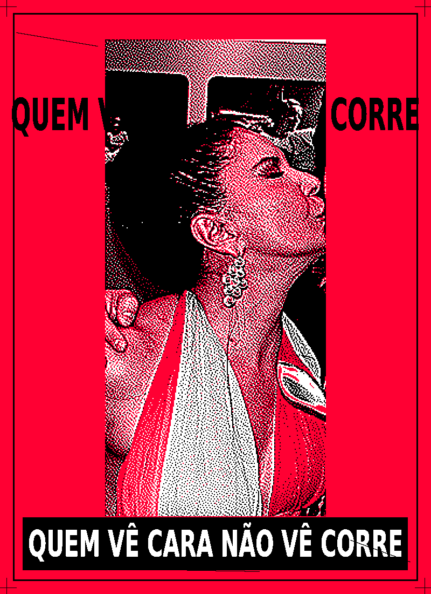
"QUEM VÊ CARA NÃO VÊ CORRE"
$navalha poster claudia-wonder.jpg --estetica punk-riot --frase "QUEM VÊ CARA NÃO VÊ CORRE" -o claudia-wonder-poster.png
Histórico Cultural: Evoca a mítica e indomável figura de Madame Satã nos cortiços e cabarés da Lapa boêmia carioca do início do século XX. O contraste áspero do entalhe em madeira e linóleo popular reflete a malandragem indócil, o capoeirista imbatível e a resistência de corpos negros e dissidentes contra a repressão policial da Primeira República.
Justificativa Técnica: Opera com segmentação estrita por luminância e difusão de erro Atkinson acentuada com filtro unsharp de 3.0x. A paleta tricromática em carvão linóleo e ouro queimado sobre papel kraft resgata o corte dramático da gravura popular e o fio cortante de navalhas no calcanhar.

"NO FIO DA NAVALHA // QUEM ME PROTEGE NÃO DORME"
$navalha poster madame-sata.jpg --estetica navalha-sata --frase "NO FIO DA NAVALHA // QUEM ME PROTEGE NÃO DORME" -o madame-sata-poster.png
Histórico Cultural: Evoca as copiadoras analógicas de diretórios acadêmicos, sindicatos e repartições públicas dos anos 80 e 90. O cilindro fotocondutor já estava riscado, o pó de toner estava no fim, o vidro da máquina guardava impressões digitais de meses e o papel barato amarelava imediatamente ao sair quente da esteira.
Justificativa Técnica: Implementa a matriz geométrica Bayer 8x8 (Ordered Dithering) com unsharp masking agressivo (3.2x), queima drástica dos níveis intermediários e faixa com distorções e artefatos determinísticos de fotocopiadora analógica (jitter de varredura lateral, riscos de cilindro com perda de toner e micro-cavidades de descolamento de pó). O resultado é a textura granulada e física de toner de carbono sobre celulose oxidada.
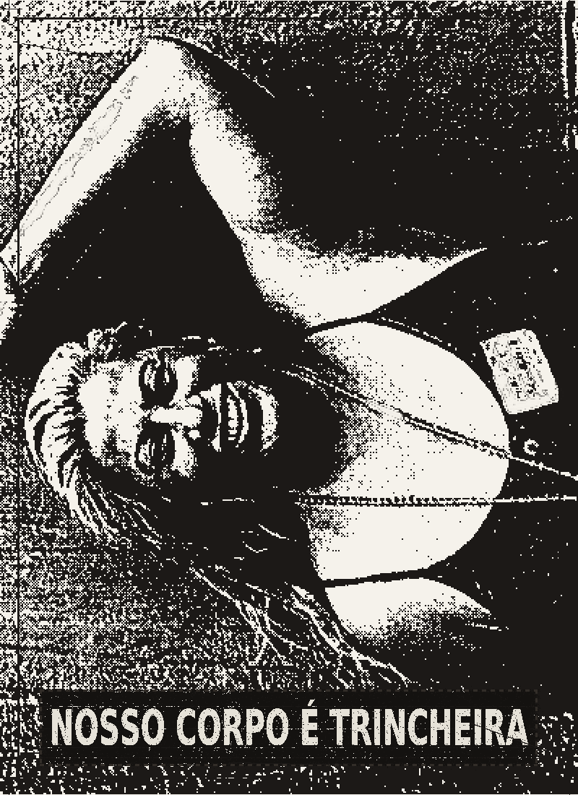
"NOSSO CORPO É TRINCHEIRA"
$navalha poster indianarae-siqueira.jpg --estetica xerox-podre --frase "NOSSO CORPO É TRINCHEIRA" -o indianarae-siqueira-poster.png
Histórico Cultural: Inspirado na estética documental dos manuscritos e fichários datilografados em máquinas Olivetti durante os anos 70 e 80. Referencia a publicação clandestina e a escrita corajosa de cartas e relatórios médicos em papel kraft e fita de carbono oxidada que abriram caminho para os direitos transmasculinos no Brasil.
Justificativa Técnica: Difusão bidimensional Floyd-Steinberg de alta densidade associada a um recorte cirúrgico de silhueta (threshold 0.82) e gama rebaixada (0.85). A fusão do sépia escuro com o ocre kraft reproduz a granulação tátil de documentos antigos arquivados sob sigilo.
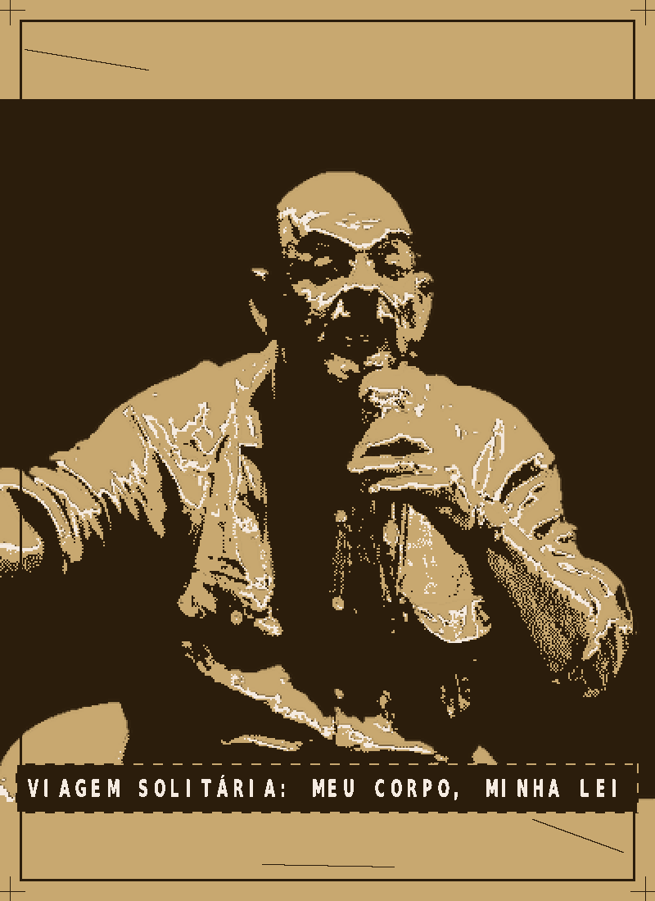
"VIAGEM SOLITÁRIA: MEU CORPO, MINHA LEI"
$navalha poster joao-w-nery.jpg --estetica viagem-solitaria --frase "VIAGEM SOLITÁRIA: MEU CORPO, MINHA LEI" -o joao-w-nery-poster.png
Histórico Cultural: Uma homenagem ao submundo boêmio do Rio de Janeiro: a Lapa histórica, as vielas sob os Arcos, luzes de neon refletidas no asfalto molhado após pancadas de chuva de verão e a estética cyberpunk da América Latina periférica.
Justificativa Técnica: Duotone ácido de alta frequência cromática. Utiliza a difusão de erro clássica de Floyd-Steinberg com Varredura em Serpentina (alternando esquerda-direita e direita-esquerda entre linhas pares e ímpares para aniquilar artefatos lineares). A tipografia recebe distorção vertical forçada de 180% a 220%, ocupando agressivamente a parte aérea do pôster.
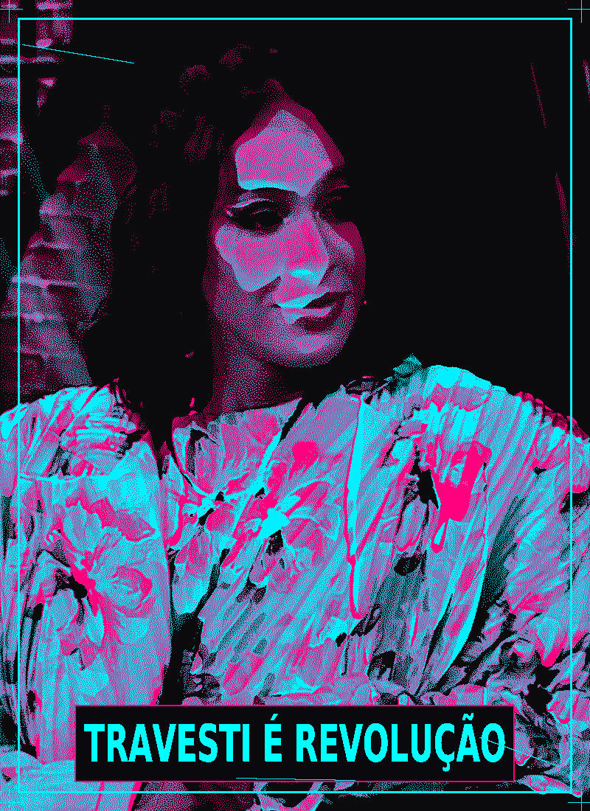
"TRAVESTI É REVOLUÇÃO"
$navalha poster linn-da-quebrada.jpg --estetica lapa-noturna --frase "TRAVESTI É REVOLUÇÃO" -o linn-da-quebrada-poster.png
Histórico Cultural: Inspirado nos cartazes de agitação e propaganda do teatro operário, teatro de arena e nas artes gráficas construtivistas dos anos 60 e 70. Transfere para a cena do teatro trans contemporâneo os blocos tipográficos maciços, as diagonais de tensão visual e a urgência da cena que não pede permissão para ocupar os palcos.
Justificativa Técnica: Retícula matricial ordenada Bayer 4x4 combinada com corte de guilhotina e tipografia ampliada de fundo sangrando em vermelho carmesim vibrante (`#B31B1B`). O acabamento de linhas retas e alto contraste tipográfico gera o impacto imediato de cartazes de lambe-lambe de rua.
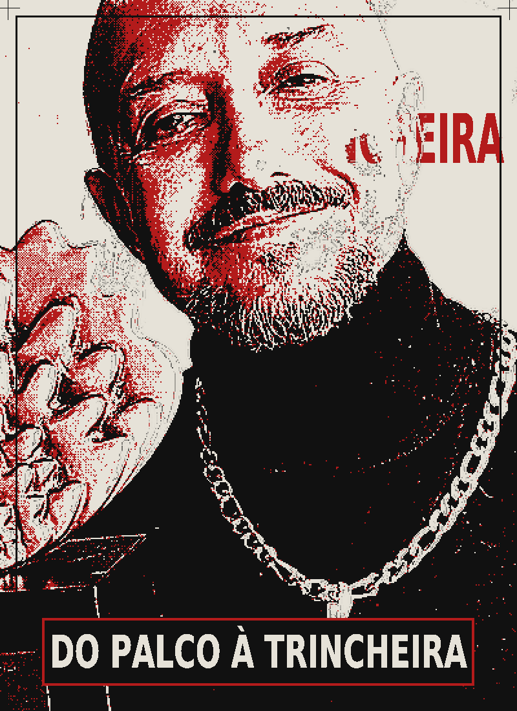
"DO PALCO À TRINCHEIRA"
$navalha poster leo-moreira-sa.jpg --estetica teatro-operario --frase "DO PALCO À TRINCHEIRA" -o leo-moreira-sa-poster.png
Histórico Cultural: A Risografia (inventada pela Riso Kagaku Corporation no Japão nos anos 80) foi adotada por artistas independentes no mundo inteiro por sua textura tátil única. Na impressora Riso, cada cor é física e independente, passando por um tambor de malha que deposita tinta pura com pontos mecânicos visíveis.
Justificativa Técnica: Algoritmo de Halftone Analógico a 45 graus, simulando o comportamento de retículas de chapa física de jornal e silk-screen. As altas luzes preservam o amarelo elétrico, enquanto os meios-tons e sombras são sustentados pelo rosa fluorescente e azul royal.
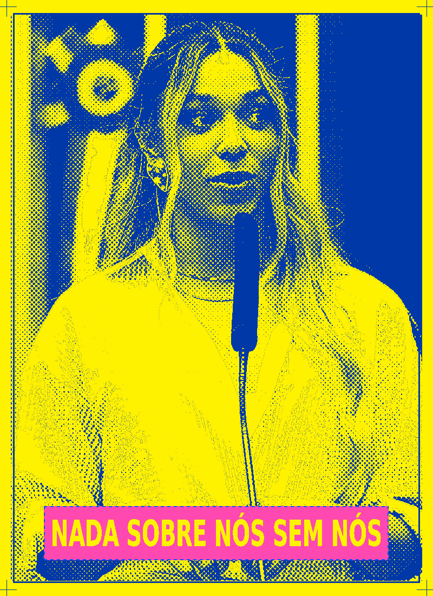
"NADA SOBRE NÓS SEM NÓS"
$navalha poster erika-hilton.jpg --estetica risografia --frase "NADA SOBRE NÓS SEM NÓS" -o erika-hilton-poster.png
Histórico Cultural: Homenagem à primeira onda de manifestos eletrônicos, zines distribuídos via BBS (Bulletin Board Systems), disquetes e os primeiros sites da Web 1.0 dos anos 90. Representa a circulação livre de textos ensaísticos, subversão linguística e a demolição das fronteiras entre a literatura erudita e a vivência da rua.
Justificativa Técnica: Quantização matricial com retícula Bayer 8x8 em fundo azul ultramarino (`#001188`) associada a tarjas contrastantes em amarelo elétrico CRT (`#FFEE00`). O sujeito preserva o enquadramento fotográfico pleno sem guilhotina e adquire a estética inconfundível dos gráficos digitais dos primeiros sistemas de rede.
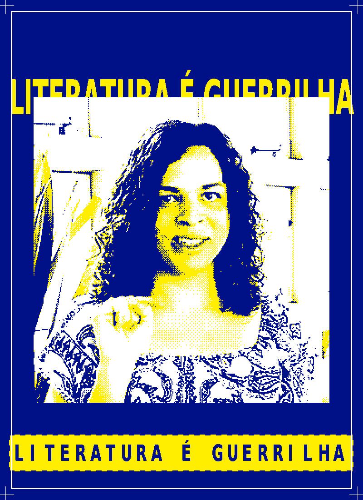
"LITERATURA É GUERRILHA"
$navalha poster amara-moira.jpg --estetica fanzine-digital --frase "LITERATURA É GUERRILHA" -o amara-moira-poster.png
Histórico Cultural: O brutalismo industrial e a estética operária: sinalizações de perigo em usinas, fitas de interdição de obras públicas, maquinários pesados e símbolos de alta tensão. É a paleta de maior urgência e contraste da percepção óptica humana.
Justificativa Técnica: Paleta binária pura com Atkinson dither, combinada com marcas de corte nas quatro quinas e tarja maciça diagonal de aviso. Transmite choque visual imediato mesmo a longas distâncias.
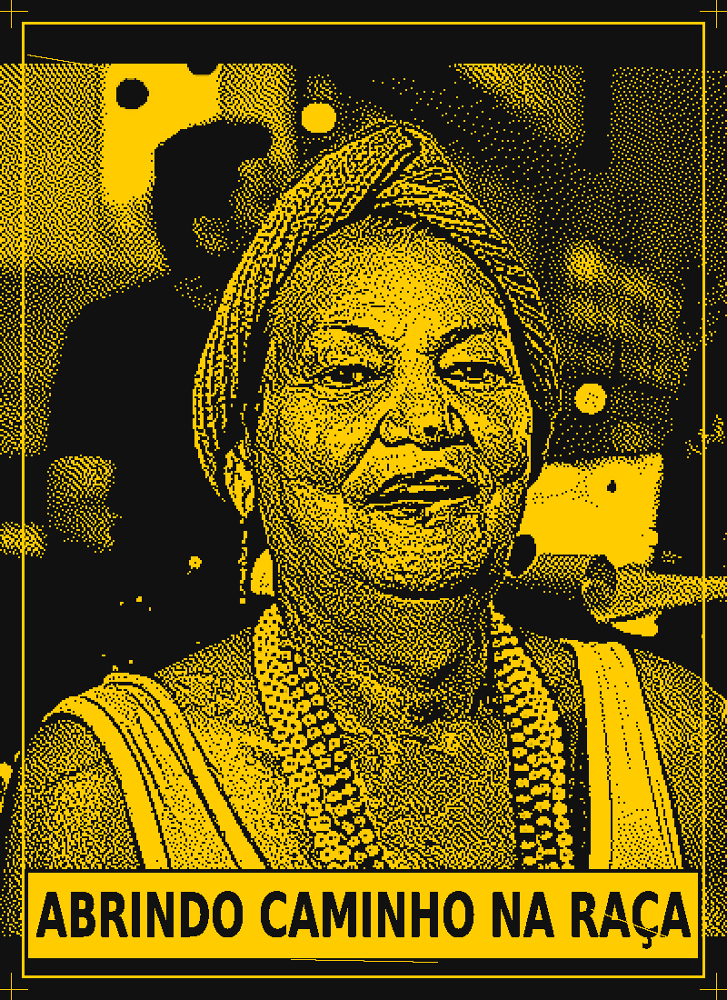
"ABRINDO CAMINHO NA RAÇA"
$navalha poster katia-tapety.jpg --estetica asfalto-alerta --frase "ABRINDO CAMINHO NA RAÇA" -o katia-tapety-poster.png
Histórico Cultural: Em 1987, a IBM introduziu o padrão VGA. Seu subsistema mais lendário foi o Modo 13h: uma tela de 320x200 pixels com 256 cores simultâneas selecionadas de um DAC de 18 bits. O Modo 13h deu origem à era de ouro dos jogos de computador para MS-DOS (Doom, Wolfenstein 3D, Monkey Island), aos programas de arte gráfica como o Deluxe Paint e à lendária demoscene dos anos 90 que cabia em disquetes de 1.44MB.
Justificativa Técnica: Opera com downsampling forçado para exatamente 320 pixels de largura base (proporção idêntica ao Modo 13h). A quantização utiliza a tabela exata de 256 cores (as 16 cores básicas do BIOS/EGA, o cubo RGB 6x6x6 de 216 cores e uma rampa de 24 tons de cinza). O dither é processado por matriz Bayer 4x4 e ampliado por Nearest-Neighbor 3x, mantendo os pixels perfeitamente duros, sem qualquer borrão bilinear.
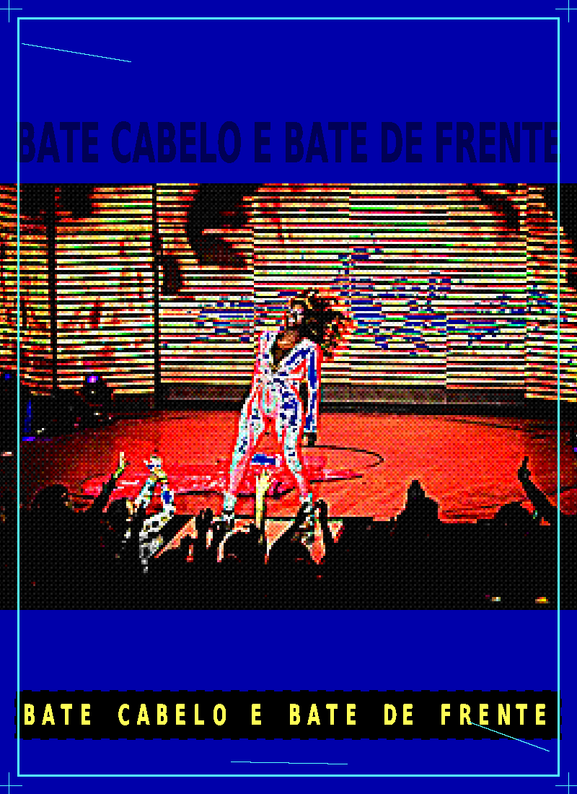
"BATE CABELO E BATE DE FRENTE"
$navalha poster marcia-pantera.jpg --estetica vga256 --frase "BATE CABELO E BATE DE FRENTE" -o marcia-pantera-poster.png
Histórico Cultural: Em agosto de 1981, a IBM lançou a placa Color/Graphics Adapter (CGA) para o IBM PC 5150. Equipada com um controlador Motorola MC6845 e míseros 16 KB de memória de vídeo, a placa não tinha capacidade de endereçar livremente cores por pixel em resolução gráfica (320x200). A engenharia da IBM fixou então duas paletas rígidas de 4 cores no hardware (Paleta 1: Preto, Ciano, Magenta, Branco; Paleta 0: Preto, Verde, Vermelho, Amarelo). Essa restrição forçou os primeiros desenvolvedores e artistas a criarem mundos com céus magenta e mares ciano fluorescente, fundando a estética cibernética mais alienígena dos primórdios da microinformática.
Justificativa Técnica: Downsampling forçado para 320 pixels de largura com quantização euclidiana estrita sobre a Paleta 1 CGA em alto brilho. O padrão de retícula utiliza dithering matricial Bayer 4x4 expandido por Nearest-Neighbor 3x, preservando a pureza geométrica crua dos monitores CRT RGB com entrada digital TTL da década de 1980.
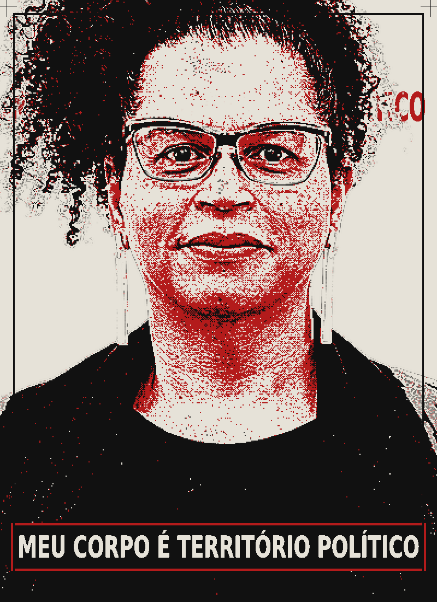
"MEU CORPO É TERRITÓRIO POLÍTICO"
$navalha poster neon-cunha.jpg --estetica cga --frase "MEU CORPO É TERRITÓRIO POLÍTICO" -o neon-cunha-poster.png
Histórico Cultural: Em 1984, Bill Atkinson criou para o Macintosh original a rotina gráfica QuickDraw e o célebre algoritmo Atkinson Dithering para simular gradientes ricos na tela monocromática de 512x342 pixels. No ano seguinte, em 1985, Andy Warhol subiu ao palco de lançamento do Commodore Amiga 1000 com Debbie Harry e declarou sua fascinação pela estética de preenchimentos eletrônicos saturados. Este preset funde o grão tipográfico do Mac clássico com as sobreposições de silkscreen desalinhadas e cores fluorescentes da Pop Art novaiorquina.
Justificativa Técnica: Downsampling na proporção canônica de 512 pixels com difusão de erro de 1 bit calibrada por Atkinson. A saída é mapeada com contraste forçado sobre duotones serigráficos de alta vibração ótica (amarelo puro e rosa fluorescente), com registro propositalmente deslocado nos elementos de moldura e tipografia pesada.
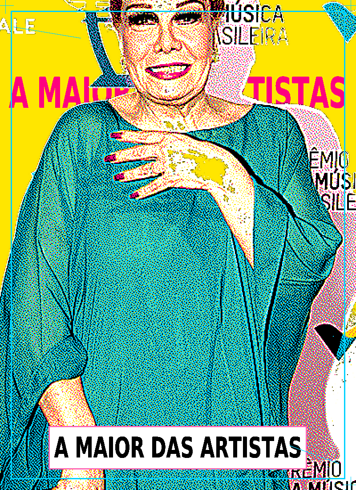
"A MAIOR DAS ARTISTAS"
$navalha poster rogeria.jpg --estetica old-mac-pop-art --frase "A MAIOR DAS ARTISTAS" -o rogeria-poster.png
Histórico Cultural: Tributo à série histórica "Derivadas de uma Imagem" criada em 1971 pelo artista concreto paulistano Waldemar Cordeiro e pelo físico Giorgio Moscati no Centro de Computação da USP, utilizando um computador IBM 360/44 e impressora matricial de linha IBM 1403. Cordeiro foi o pioneiro absoluto da arte digital na América Latina, decompondo fotografias da imprensa em caracteres alfanuméricos com diferentes densidades de tinta para subverter o controle da informação durante os anos de chumbo da ditadura militar.
Justificativa Técnica: Implementa algoritmo de conversão por densidade ótica alfanumérica monoespaçada com rasterização tipográfica em alta fidelidade no pôster (@%#*+=-:.). A chapa é mapeada em grade de células 9x12 px (~82 colunas) renderizadas diretamente sobre fundo preto CRT P1 (#050A05) com 4 níveis tonais de fósforo verde (#005514, #00AA32 e #00FF66), e o CLI disponibiliza o comando nativo navalha ascii <foto> --colunas 80 para despejo direto em texto puro no stdout do terminal Linux.
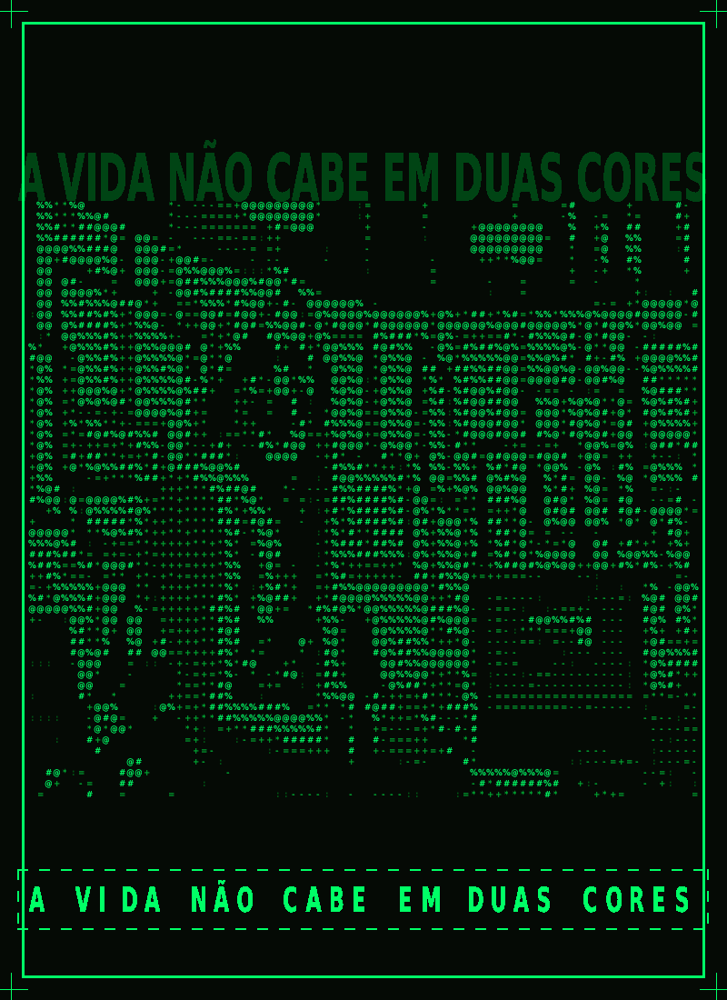
"A VIDA NÃO CABE EM DUAS CORES"
$navalha poster laerte-coutinho.jpg --estetica ascii-art --frase "A VIDA NÃO CABE EM DUAS CORES" -o laerte-coutinho-poster.png
Histórico Cultural: Inspirado na imprensa sensacionalista de circulação diária e nos jornais populares de rotativa das décadas de 1980 e 1990 (como o clássico paulistano Notícias Populares, O Povo e o jornalismo investigativo de ronda policial). Esse formato explorava a urgência e o choque urbano com manchetes em caixas amarelas e vermelhas gritadas e fotos granuladas de rotativa rápida sobre papel jornal cinza. Era a imprensa que frequentemente abordava as travestis da noite com estigma e sensacionalismo policialesco — e que encontrou em Luana Muniz uma força inquebrantável que tomava o microfone com altivez, queixo erguido e autoridade moral absoluta para impor respeito e dignidade.
Justificativa Técnica: Downsampling forçado para 720 pixels de largura com unsharp masking agressivo (3.2x) que força os microcontrastes de contorno facial da rotativa. A quantização utiliza difusão de erro Floyd-Steinberg em 4 tons saturados (papel jornal cinza claro, amarelo manchete, vermelho e preto), tarja vermelha de edição extra no topo e tarja preta de manchete urgente na base, com marcas de registro gráfico industrial.
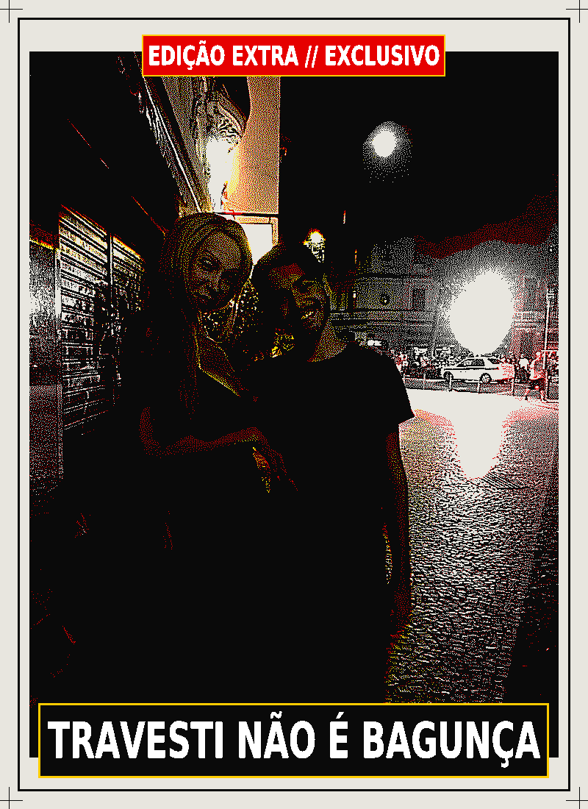
"TRAVESTI NÃO É BAGUNÇA"
$navalha poster luana-muniz.jpg --estetica tabloide-popular --frase "TRAVESTI NÃO É BAGUNÇA" -o luana-muniz-poster.png
Histórico Cultural: Inspirado na rigidez construtivista e na arquitetura brutalista urbana: concreto aparente, blocos ortogonais sem concessões estéticas fáceis e o peso da resistência coletiva nas metrópoles. Homenagem a Drica D'arc Meirelles, fundadora e liderança histórica da ADEH (Associação em Defesa dos Direitos Humanos com Enfoque na Sexualidade) em Santa Catarina, combatente incansável da letalidade policial e esteio de acolhimento de base para pessoas trans em extrema vulnerabilidade.
Justificativa Técnica: Downsampling para largura base de 720px com pré-processamento de máscara de nitidez brutal (unsharp masking 3.5x). Binarização ótica estrita por limiar médio de luminância (Threshold Global), eliminando dispersões estocásticas para produzir silhuetas pesadas e cortes ortogonais contrastantes sobre textura de concreto.
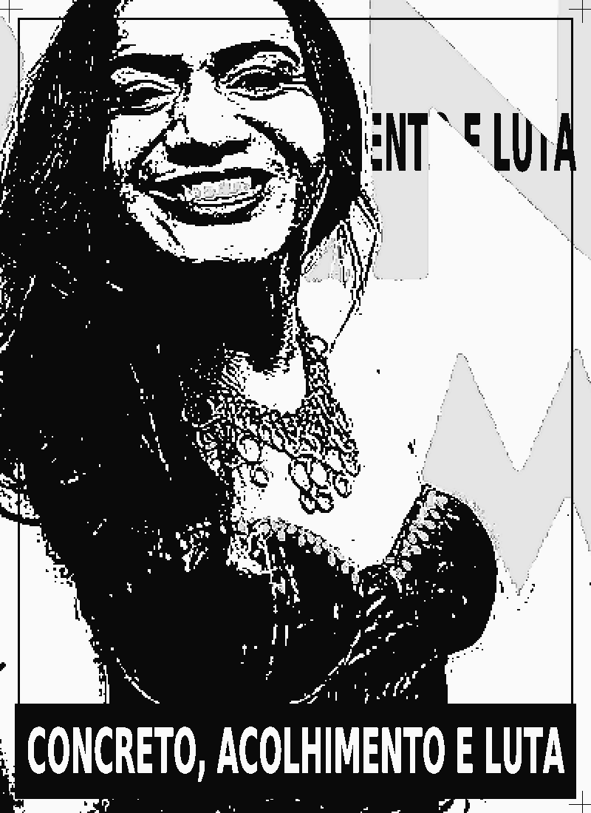
"CONCRETO, ACOLHIMENTO E LUTA"
$navalha poster drica-meirelles.jpg --estetica brutalismo --frase "CONCRETO, ACOLHIMENTO E LUTA" -o drica-meirelles-poster.png
Histórico Cultural: Fusão agressiva entre fotografia realista, caos de colagem jornalística e tipografia mecânica. Homenagem a Renata Carvalho, atriz, dramaturga, formuladora do conceito estético e político da Transpofagia (o corpo travesti como matéria-prima e manifesto cênico) e fundadora do MONART (Movimento Nacional de Artistas Trans).
Justificativa Técnica: Motor reescrito do zero: realce morfológico de contornos faciais, quantização tonal em 4 níveis calibrados por Floyd-Steinberg em escala carmim e preto profundo, com tarja mecânica inspirada em fitas de máquina de escrever analógica e carimbos de choque visual.
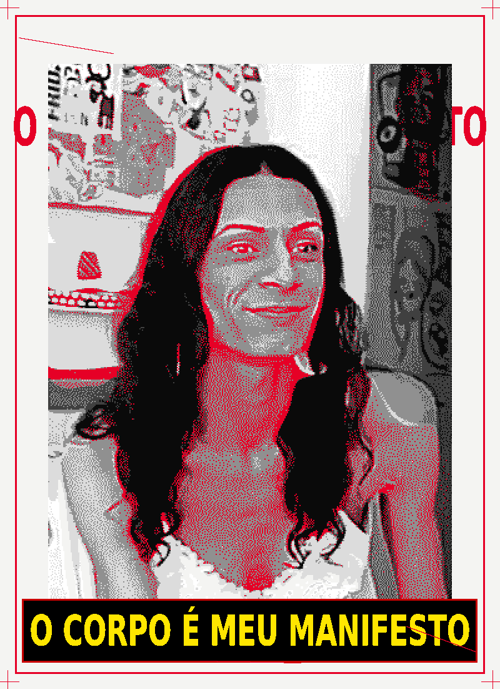
"O CORPO É MEU MANIFESTO"
$navalha poster renata-carvalho.jpg --estetica trash-polka --frase "O CORPO É MEU MANIFESTO" -o renata-carvalho-poster.png
Histórico Cultural: Homenagem ao hardware lendário de jogos eletrônicos de 8 bits do final dos anos 70, centrado no circuito integrado TIA (Television Interface Adapter) do Atari 2600. Associa a revolução das primeiras comunidades digitais à articulação pioneira de base liderada por Jovanna Baby, fundadora da ASTRAL (1992) e idealizadora do I Encontro Nacional de Travestis e Liberados (ENTLAIDS, 1993).
Justificativa Técnica: Downsampling estrito para a geometria nativa TIA de 160x192 pixels. Quantização euclidiana rápida sobre paleta de cores NTSC do console com dithering matricial Bayer 4x4. Intercalação de scanlines horizontais (linhas de varredura pares forçadas a preto) e upscaling por Nearest-Neighbor 4x sem interpolação linear, emulando a sensação de um monitor CRT analógico de 1977.
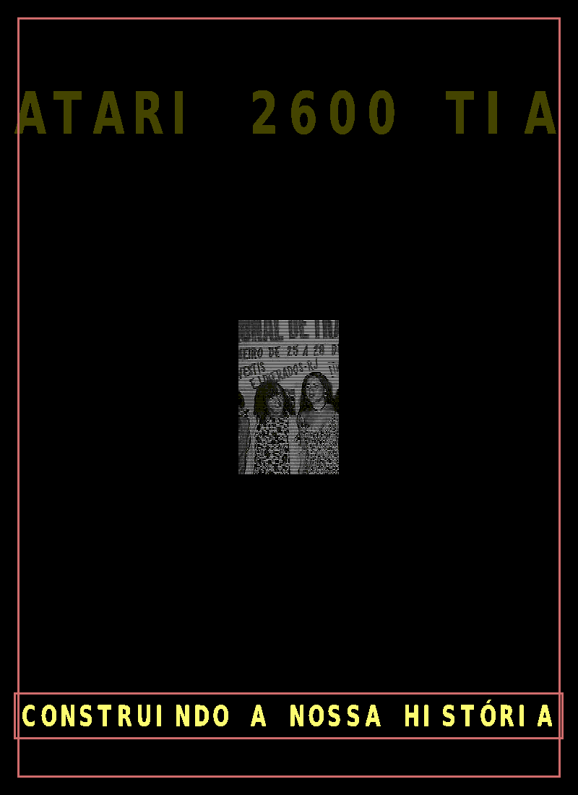
"CONSTRUINDO A NOSSA HISTÓRIA"
$navalha poster jovanna-baby.jpg --estetica atari-gaming --frase "CONSTRUINDO A NOSSA HISTÓRIA" -o jovanna-baby-poster.png
Histórico Cultural: Tributo à mídia artesanal de panfletagem de base, centros acadêmicos e sindicatos das décadas de 70 e 80: o mimeógrafo a álcool e a tinta violeta cópia. Homenagem a Keila Simpson, liderança histórica do movimento trans brasileiro, presidenta da ANTRA e defensora intransigente da vida, da cidadania e do acolhimento comunitário.
Justificativa Técnica: Algoritmo de reprodução capilar: inversão de densidade óptica em papel manilha amarelado (`#F4EFE6`), retícula Bayer 4x4 e sangramento morfológico simulando o vazamento do solvente alcoólico (dispersão em raio de 1px nas áreas com saturação superior a 70%), com bordas em picote de estêncil manual.
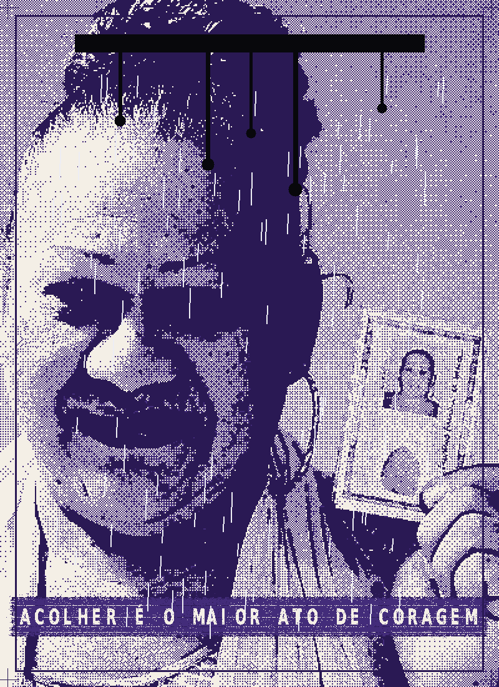
"ACOLHER É O MAIOR ATO DE CORAGEM"
$navalha poster keila-simpson.jpg --estetica mimeografo --frase "ACOLHER É O MAIOR ATO DE CORAGEM" -o keila-simpson-poster.png
Histórico Cultural: Inspirado na secular gravura popular e na literatura de cordel brasileira: matrizes talhadas na faca, prensa manual e tinta gráfica crua. Homenagem à ancestralidade de Xica Manicongo, primeira travesti não-indígena documentada na história do Brasil colonial (Salvador, século XVI), cujo porte e insubmissão desafiaram a violência do Santo Ofício.
Justificativa Técnica: Algoritmo de binarização adaptativa de Sauvola ($15 \times 15$, $k=0.35$, $R=128$) com intercalação de ranhuras direcionais que simulam veios vegetais da tábua de corte. Contraste talhado em preto de fumo (`#131110`) e papel kraft envelhecido (`#D6C4A5`) com tarja de impacto entalhada.
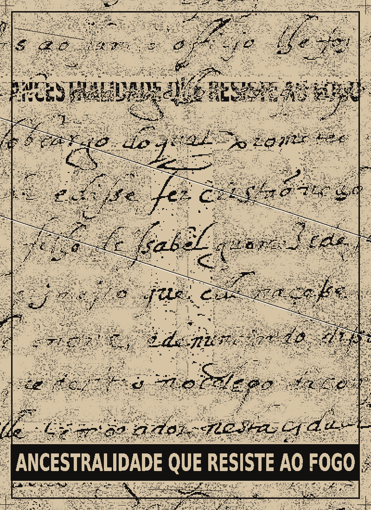
"ANCESTRALIDADE QUE RESISTE AO FOGO"
$navalha poster xica-manicongo.jpg --estetica xilogravura --frase "ANCESTRALIDADE QUE RESISTE AO FOGO" -o xica-manicongo-poster.png
Histórico Cultural: Estética de telas catódicas instáveis, perda de sincronismo vertical e desvio de fases de canhão eletrônico. Homenagem à coragem pioneira de Robeyoncé Lima, primeira advogada travesti negra do Nordeste com inscrição na OAB-PE, co-deputada estadual e precursora da litigância estratégica popular.
Justificativa Técnica: Algoritmo de corrupção analógica determinística: jitter senoidal de linhas com saltos abruptos de fase, aberração cromática com dispersão planar de canais R e B (±4px), barra de perda de sincronismo vertical (V-Hold de 12px) e entrelaçamento de scanlines luminosas em tons de ciano CRT e vermelho aberração.
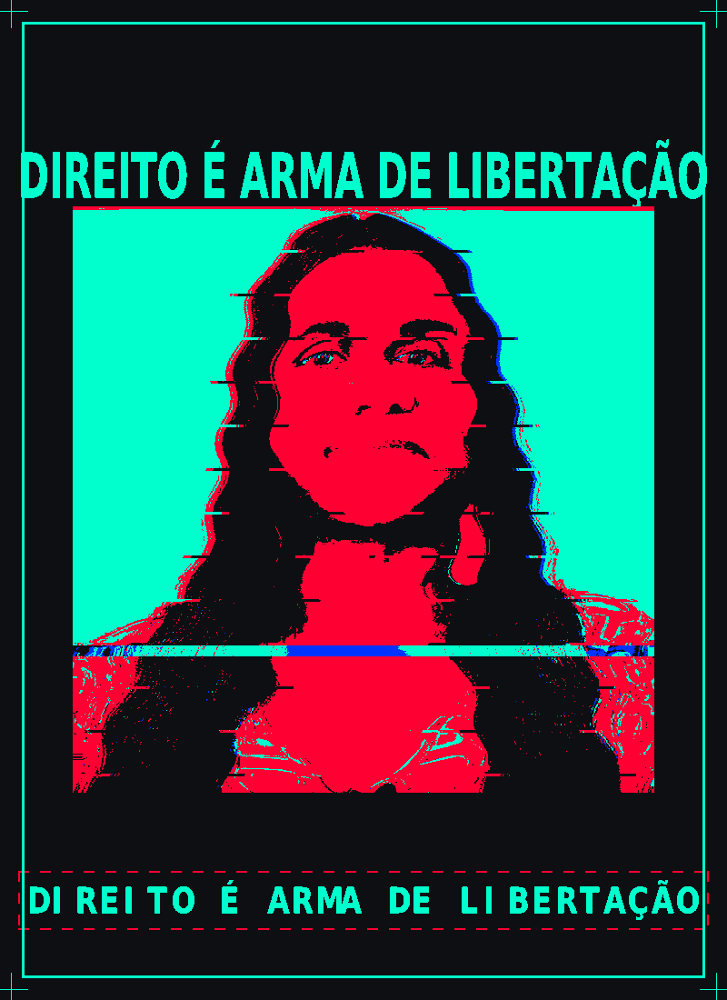
"DIREITO É ARMA DE LIBERTAÇÃO"
$navalha poster robeyonce-lima.png --estetica glitch-crt --frase "DIREITO É ARMA DE LIBERTAÇÃO" -o robeyonce-lima-poster.png
Histórico Cultural: Estética crua inspirada no movimento punk e pós-punk independente, no circuito de fitas cassete demo de garagem e na atitude cênica marginal. Homenagem à cantora, compositora, atriz e performer travesti Marina Mathey, cujo show e trabalho autoral TRAVA canalizam a fúria visceral, a desobediência e a poesia eletrônica underground contra a hipocrisia e a transfobia.
Justificativa Técnica: Algoritmo de difusão de erro de Atkinson com unsharp agressivo (força 3.2, raio 2), queima de níveis de xerox de encarte de cassete, sticker procedural de fita K7 com bobinas dentadas e rasgo de papel.
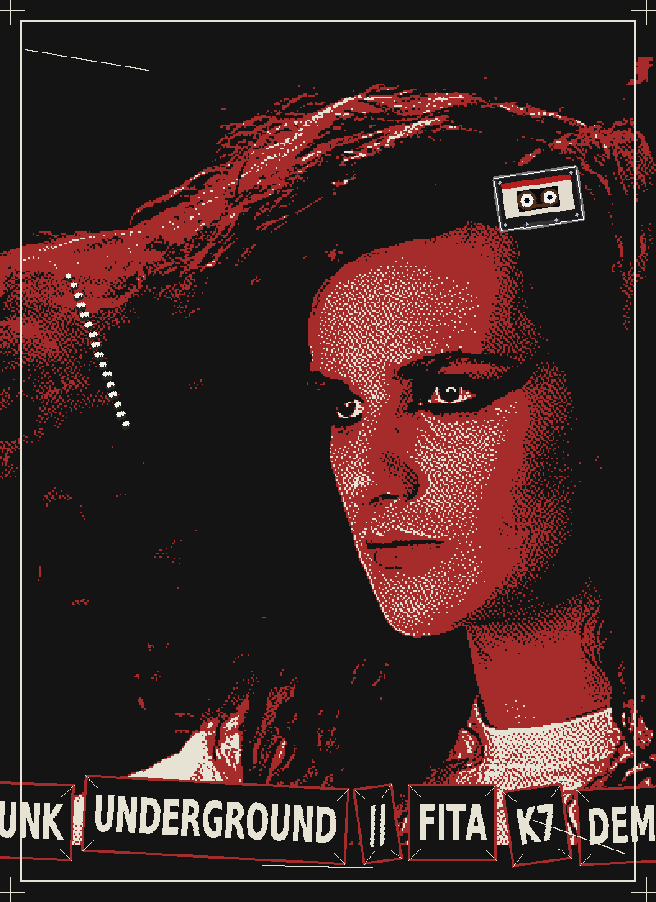
"PUNK UNDERGROUND // FITA K7 DEMO"
$navalha poster marina-mathey.jpg --estetica punk-80-br --frase "PUNK UNDERGROUND // FITA K7 DEMO" -o poster-punk80.png
Histórico Cultural: Tradição autogestionária dos fanzines artesanais grampeados na dobra e da tipografia stencil recortada à mão com gilete. Homenagem à professora universitária, psicóloga, escritora e pioneira no transfeminismo negro Jaqueline Gomes de Jesus.
Justificativa Técnica: Retícula mecânica de meio-tom (Halftone 45°, célula 5px), marcas determinísticas de grampos metálicos na lombada (DamageEffect::Grampo) e sticker Ⓐ com borda picotada sobre papel kraft.
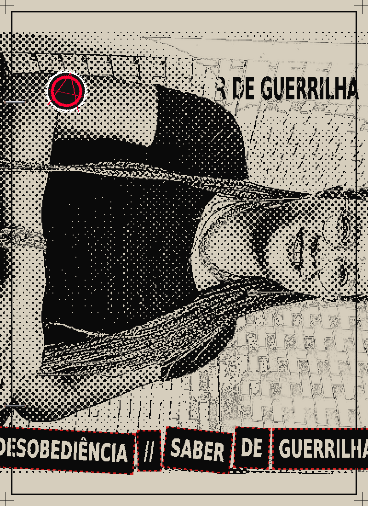
"DESOBEDIÊNCIA // SABER DE GUERRILHA"
$navalha poster jaqueline-jesus.jpg --estetica anarco-zine --frase "DESOBEDIÊNCIA // SABER DE GUERRILHA" -o poster-anarcozine.png
3. Manipulação de Imagem: Rotação e Corte Automático Otsu
O motor do Navalha inclui ferramentas de geometria e segmentação binarizada para recorte de elementos visuais antes da retícula:
- Rotação Ortogonal Arbitrária (0°, 90°, 180°, 270°): Permite inverter a orientação de fotos de celular ou produzir diagramações verticais/horizontais imediatas via
--rotacaono CLI ou botão direto na interface web. - Limiar Automático de Otsu (Otsu's Binarization): Calcula estatisticamente a variância intra-classes do histograma da imagem para encontrar o limiar exato que separa sujeito e fundo sem necessidade de ajuste manual no slider da guilhotina (
--auto-threshold).
4. Marcas, Danos & Intervenção Física
O design de fanzine punk e pôsteres urbanos subversivos não nasce limpo em softwares vetoriais assépticos: ele carrega as cicatrizes da rua, da prensa mecânica clandestina e da censura policial. O Navalha implementa algoritmos de degradação e intervenção física deliberada:
- 💥 Tiro: Impactos de projétil com perfuração profunda, halo de queima de pólvora e estrias de fratura radial no papel.
- ⚡ Rasgo: Ruptura diagonal com borda em zigue-zague exibindo o miolo fibroso exposto do papel e sombra projetada da fenda.
- 🌧️ Chuva: Linhas estocásticas de intempérie que simulam pôster lambe-lambe exposto à chuva ácida nas ruas.
- 🩸 Sangue: Respingo violento em tom carmesim com gotículas satélites radiais e escorrimento gravitacional.
- 💧 Tinta: Poça de tinta preta industrial sangrada no topo com pingos densos de gotejamento vertical.
- 🗡️ Faca: Incisões duplas de navalha rasgando a chapa com realce de fibras rompidas sob tração mecânica.
- 🔤 Pixo: Inscrição rúnica da pixação brutalista paulistana com flecha de ascensão e traçado agressivo.
- ⬛ Censura: Tarja preta espessa de bloqueio governamental com tipografia brutalista vazada
[ CENSURADO ]. - 🚨 Puliça: Carimbo avermelhado de apreensão policial (
PULIÇA / APREENDIDO) com falhas e textura de borracha envelhecida.
5. Stickers & Adesivos Contraculturais
Os lambe-lambes, zines e cartazes de contracultura sempre foram enriquecidos por adesivos vinílicos colados sobre a chapa principal. O motor do Navalha disponibiliza uma coleção vetorial procedural de stickers temáticos que podem ser aplicados com cores originais autênticas ou filtrados deterministamente na paleta do pôster (--filtrar-stickers):
- Ⓐ Anarquia: O clássico 'A' transpassando o círculo em vermelho vivo sobre base circular recortada.
- 🗡️ Lâmina de Barbear: Chapa de aço niquelada com os cortes canônicos centrais vazados e entalhe industrial.
- ☠️ Caveira Punk: Crânio brutalista em tom osso sobre fundo negro com tíbias cruzadas.
- ☣️ Biohazard: Selo de alerta amarelo fluorescente com trifólio de perigo biológico.
- 🄯 Copyleft: O 'C' espelhado de libertação da propriedade intelectual com aro de alto contraste.
- 📊 Barcode 1312: Código de barras consumista rasurado com tinta vermelha em spray diagonal.
- 🧷 Alfinete de Fralda: O ícone seminal do punk britânico de 1976 em aço e reflexo metálico.
- ☻ Acid Smiley: Smiley ácido em amarelo tóxico com costura cirúrgica na boca e olhos em 'X'.
6. Caixas de Texto Extra & Posicionamento Livre
O pôster punk de rua nunca foi construído com uma única frase centralizada. Lambe-lambes, colagens situacionistas e fanzines de xerox acumulam camadas tipográficas sobrepostas em ângulos conflitantes — o texto como intervenção espacial, e não como legenda comportada. O Navalha resolve isso com a seção 6. CAIXAS DE TEXTO EXTRA da interface web e a flag --texto-extra na CLI.
Acabamentos Tipográficos
- TARJA (padrão): Fundo preto chapado, texto branco. Herança direta dos recortes de jornal usados em panfletos anarquistas e fanzines DIY dos anos 1970–80.
- TAPE (fita adesiva): Fundo cinza-claro envelhecido, texto quase preto. Evoca a fita crepe da mail art e das instalações precárias.
- SERRILHADO (neon amarelo): Fundo amarelo-neon, texto preto. Herdeiro da sinalização de segurança industrial subvertida pelos cartazes de protesto.
- RASGO: Sem fundo, texto vermelho-sangue puro sobre a imagem. Referência ao détournement situacionista e à fanzine britânica Sniffin' Glue (1976).
CLI: flag --texto-extra
--texto-extra "RESISTÊNCIA:0.5:0.25:56:10:tape" \
--texto-extra "RASGO TOTAL:0.5:0.75:64:-8:rasgo" -o poster.png
Faixas Canônicas de Texto: Manchete Superior & Slogan Inferior
Além das caixas livres de texto extra, o Navalha oferece suporte nativo e integrado a duas faixas canônicas de texto na composição do pôster: a Faixa Superior (manchete no topo, opcional) e a Faixa Inferior (frase de choque na base). Ambas mantêm consistência visual e estilística automática estrita com o preset ativo — herdando proporções, paleta cromática de texto e fundo de tarja, e o acabamento textural (como artefatos mecânicos e riscos de rolete no preset Xerox Podre).
7. Arquitetura Simétrica CLI & Web
Uma das marcas registradas do ecossistema do Navalha é a paridade completa entre o terminal UNIX e o navegador:
Quando você ajusta qualquer parâmetro na interface web (seja arrastando o slider de corte guilhotina, trocando a paleta ou alterando a frase), o rodapé do aplicativo recompõe instantaneamente o comando correspondente da CLI:
Basta clicar no botão de cópia rápida no rodapé e rodar em lote no seu servidor ou terminal Linux.